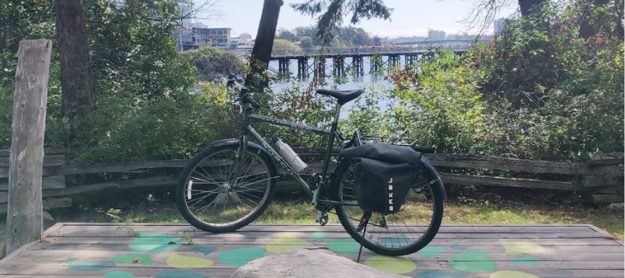

The Highlights
- Well-rounded, capable, personable.
- Accounting student at Camosun College
- MSc Astrophysics 2024
- 5+ years of working office experience
- Wants to meet your cat
It's not often you find someone with a diverse background like Fletcher's. From 8-meter world-class telescopes in Chile to Fringe theatre festivals, from GoByBikeWeeks to the Royal Theatre stage, from crochet classes in a park and publications in astronomical journals to accounting classes at Camosun College, Fletcher's diligence and enthusiasm has made a positive difference in a wide range of workplaces.
Fletcher loves to learn, and he loves to understand how things work—how systems and people fit together, and how we as humans can work together for mutual benefit. He's capable, reliable, and a quick-study. Fletcher is one of those types that makes his coworkers and supervisors breathe a little easier when he's present, because he can get things done on his own, and he also knows when it's time to come together to work on a project.
As Fletcher progresses in his accounting studies, he will be seeking co-op job positions for Fall 2026 or Winter 2027. Of particular interest is work in internal auditing, work with arts or social-benefit non-profits, or work in public service. Values that are key in a workplace for Fletcher are being in good relationship with each other, commitment to communication, mutual trust and integrity, and encouragement of lifelong learning. In the long-term he is working towards starting the CPA program in late 2027 or early 2028. Fletcher is looking forward to a career where he can apply his aptitude for analytical thinking, evidence-based problem solving, and exceptional memory for processes in service of the betterment of his communities.
🏳️⚧️ independently created and published using gitHub Pages 🏳️🌈
© Copyright 2026 The Teafort